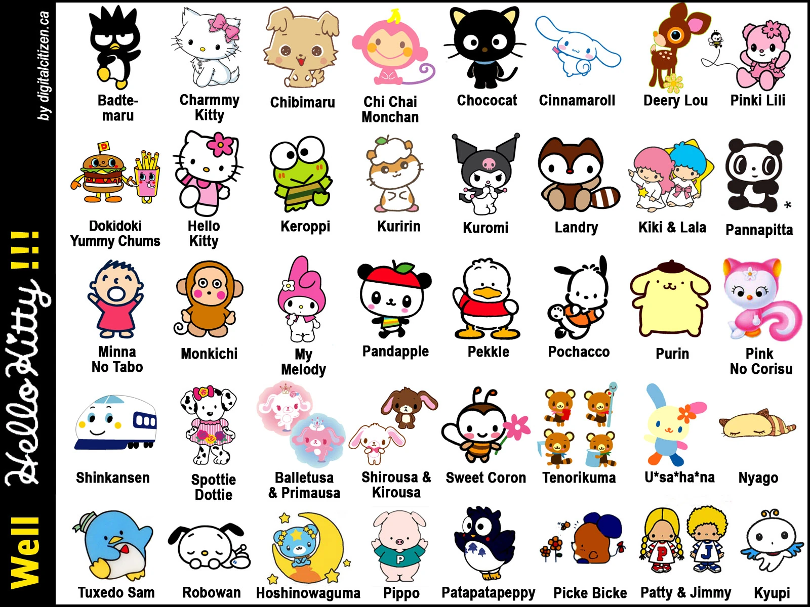

Early history
Sanrio Company, Ltd. (株式会社サンリオ, Kabushikigaisha Sanrio)[4] is a Japanese entertainment company. It designs, licenses, and manufactures products focusing on the kawaii ("cute") segment of Japanese popular culture. Their products include stationery, school supplies, gifts, and accessories, which are sold worldwide, including at specialty brand retail stores in Japan. Sanrio's best-known character is Hello Kitty, a cartoon cat[5][6][7] and one of the most successful marketing brands in the world.[8] Besides selling character goods, Sanrio takes part in film production and publishing. They own the rights to the Mr. Men characters and Japanese licensing rights to the Peanuts characters. Their animatronics branch, Kokoro Company, Ltd. (kokoro being Japanese for "heart"), is best known for the Actroid android. The company also runs a KFC franchise in Saitama Prefecture.